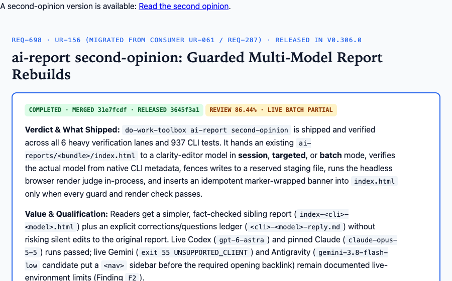
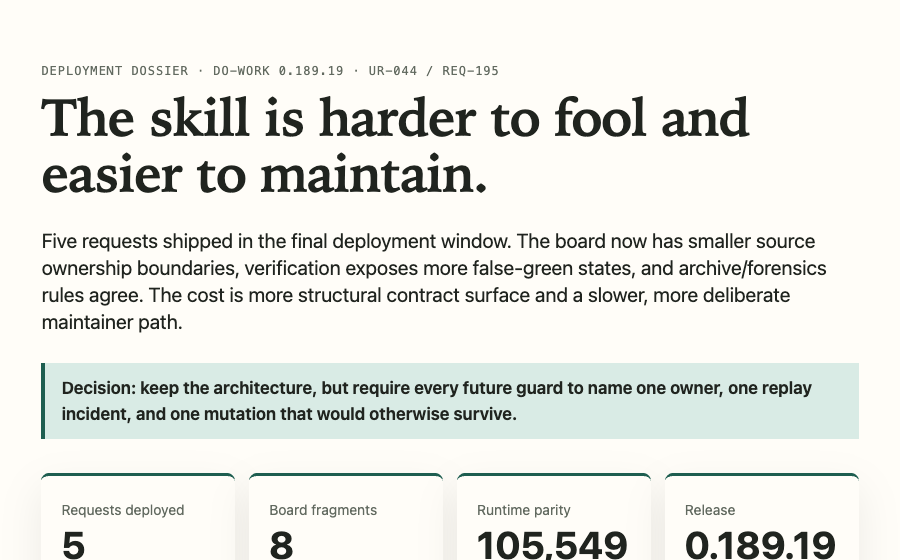
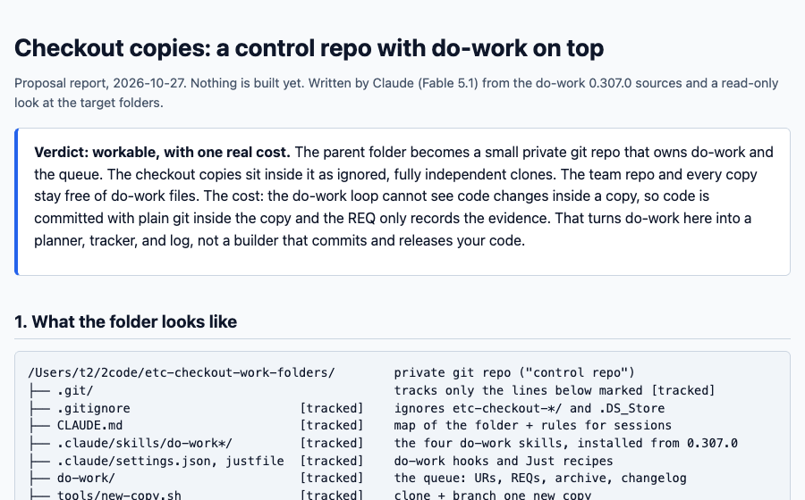
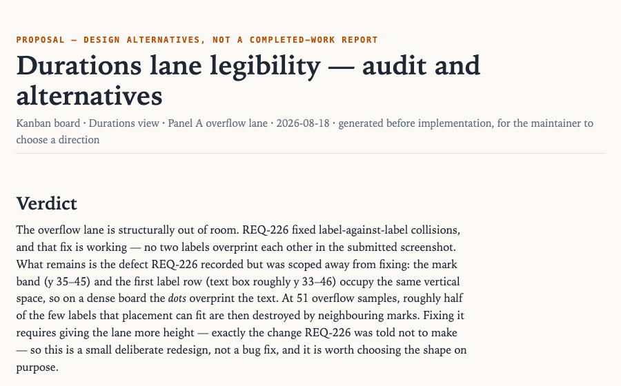
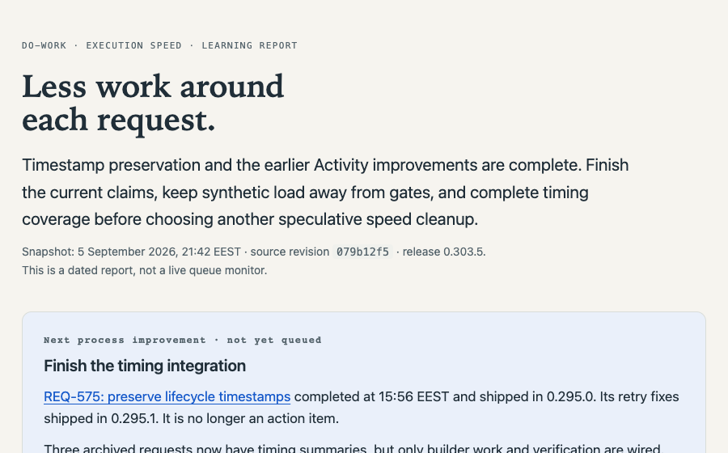
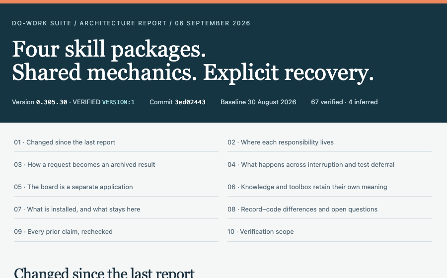
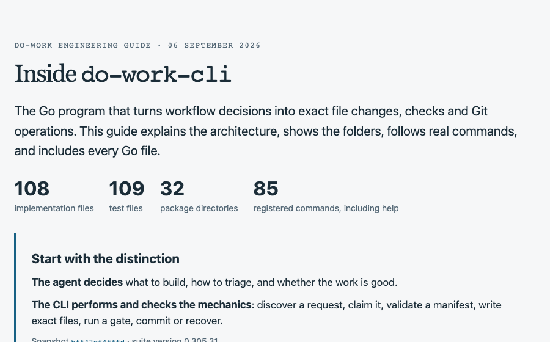
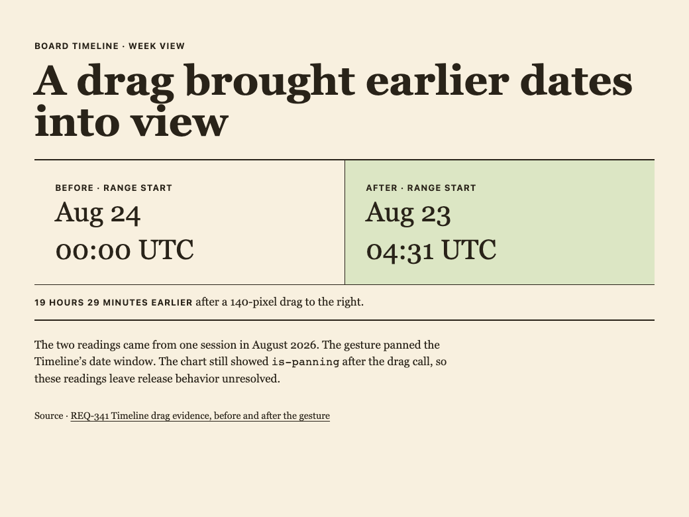
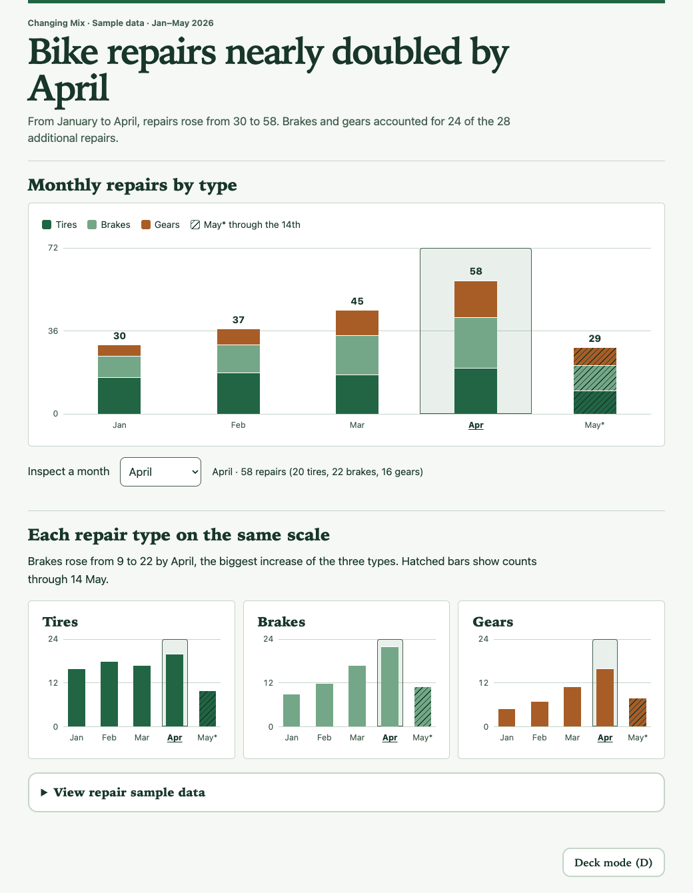
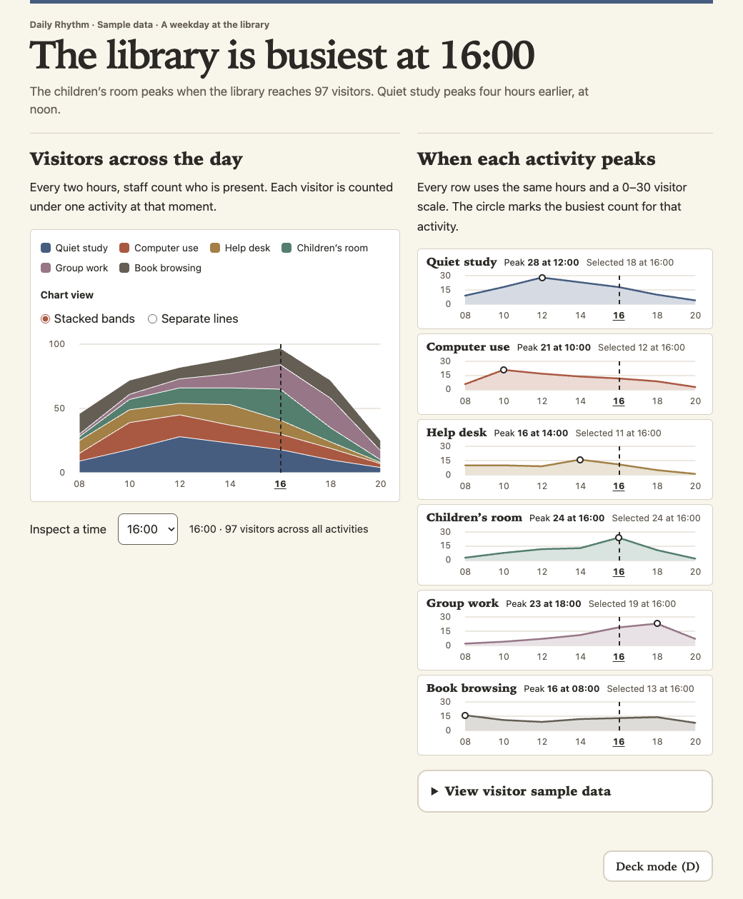

Work procedures loaded by phase
Use this design
do-work-toolbox ai-report --design "report:2026-11-11_1411_commit-22f82fed-work-procedures-load-by-phase"
Open a report from its preview. Click a name to copy it.
Work procedures loaded by phase
do-work-toolbox ai-report --design "report:2026-11-11_1411_commit-22f82fed-work-procedures-load-by-phase"

Guarded report rebuilds across models
do-work-toolbox ai-report --design "report:2026-10-15_1731_REQ-698-ai-report-second-opinion"

Board client modules and deployment evidence
do-work-toolbox ai-report --design "report:2026-08-15_1834_UR-044-board-client-modules"

Tinka as a review canvas for report bundles
do-work-toolbox ai-report --design "report:2026-11-14_1547_proposal-tinka-review-surface"

Where each memory note should go
do-work-toolbox ai-report --design "report:2026-11-15_0137_proposal-REQ-725-memory-note-destinations"

A control repository for parallel checkouts
do-work-toolbox ai-report --design "report:2026-10-27_2356_checkout-copies-control-repo"

Why labels collide above the duration ceiling
do-work-toolbox ai-report --design "report:2026-08-18_1000_durations-lane-legibility-alternatives"

Why the queue refills as fast as it drains
do-work-toolbox ai-report --design "report:2026-09-03_2145_do-work-velocity-and-pending-queue-speed"

Four skill packages and a request’s lifecycle
do-work-toolbox ai-report --design "report:2026-09-06_1706_architecture-report"

A guide to the Go CLI and its commands
do-work-toolbox ai-report --design "report:2026-09-06_2113_do-work-cli-guide"
Select a page to preview it. Click a design name to copy it.

What changed between two readings?
do-work-toolbox ai-report --design "Before and After"

Which measured cost should we investigate first?
do-work-toolbox ai-report --design "Bottleneck Hunt"

How did one failure lead to the next?
do-work-toolbox ai-report --design "Cause Chain"

Which parts account for the change in the total?
do-work-toolbox ai-report --design "Changing Mix"

When does each activity peak, and what drives the busiest hour?
do-work-toolbox ai-report --design "Daily Rhythm"

Which option earns approval given its cost, reach and trade-offs?
do-work-toolbox ai-report --design "Decision Matrix"

What evidence supports the verdict, and which checks did it pass?
do-work-toolbox ai-report --design "Evidence Verdict"

How did a regression develop, and what did the investigation establish?
do-work-toolbox ai-report --design "Incident Timeline"

How can a growth rate fall while the total keeps rising?
do-work-toolbox ai-report --design "Rate and Level"

Where do paths branch, and what does each one depend on?
do-work-toolbox ai-report --design "System Map"
Readers need to compare how the same selections rank on two measures.
do-work-toolbox ai-report --design "report:2026-11-19_0154_req748-cpu-elapsed-audit"
Choose which measured operation to investigate first.
do-work-toolbox ai-report --design "report:2026-11-19_0154_req748-latency-ranking"
Readers need to compare individual observations behind a summary.
do-work-toolbox ai-report --design "report:2026-11-19_0154_req748-replicate-variability"
Which selection accounts for the largest part of each category?
do-work-toolbox ai-report --design "report:2026-11-19_0154_req748-tool-invocation-counts"
Readers need to compare two groups across several selections.
do-work-toolbox ai-report --design "report:2026-11-19_0154_req748-warm-cold-labels"
do-work-toolbox ai-report --design "report:2026-11-14_1452_proposal-tinka-review-surface"
do-work-toolbox ai-report --design "report:2026-11-04_1747_proposal-tstack-review-workflows-rev1"
do-work-toolbox ai-report --design "report:2026-11-04_1524_proposal-tstack-review-workflows"
do-work-toolbox ai-report --design "report:2026-11-02_1757_presentation-style-gallery"
do-work-toolbox ai-report --design "report:2026-10-09_1916_REQ-632-activity-correlation-determinism"
do-work-toolbox ai-report --design "report:2026-09-09_1224_REQ-624-verification-review"
do-work-toolbox ai-report --design "report:2026-09-09_0052_do-work-improvement-review-pictures"
do-work-toolbox ai-report --design "report:2026-09-09_0044_do-work-improvement-review-simple"
do-work-toolbox ai-report --design "report:2026-09-09_0013_do-work-improvement-review-rev-v2"
do-work-toolbox ai-report --design "report:2026-09-08_2327_do-work-improvement-review"
do-work-toolbox ai-report --design "report:2026-09-06_1740_architecture-report"
do-work-toolbox ai-report --design "report:2026-09-06_1708_architecture-report"
do-work-toolbox ai-report --design "report:2026-09-06_1606_test-efficiency-improvement-proposal"
do-work-toolbox ai-report --design "report:2026-09-05_1800_REQ-588-verify-findings-slim-band-gallery"
do-work-toolbox ai-report --design "report:2026-09-05_1740_REQ-588-verify-findings-compact-mockups"
do-work-toolbox ai-report --design "report:2026-09-05_1520_activity-view-double-scroll-mockups"
do-work-toolbox ai-report --design "report:2026-09-05_1445_REQ-588-verify-findings-row-mockups"
do-work-toolbox ai-report --design "report:2026-09-03_0010_maintainer-verify-gate-cost-analysis"
do-work-toolbox ai-report --design "report:2026-09-02_1651_orchestrator-simplification-analysis"
do-work-toolbox ai-report --design "report:2026-09-01_0927_queue-analysis-time-cost-disposition"
do-work-toolbox ai-report --design "report:2026-08-30_1839_architecture-report"
do-work-toolbox ai-report --design "report:2026-08-27_1522_architecture-report"
do-work-toolbox ai-report --design "report:2026-08-27_1508_architecture-report"
do-work-toolbox ai-report --design "report:2026-08-27_1428_req-341-timeline-drag-evidence"
do-work-toolbox ai-report --design "report:2026-08-26_1709_architecture-report"
do-work-toolbox ai-report --design "report:2026-08-23_2200_durations-panel-improvement-proposal"
do-work-toolbox ai-report --design "report:2026-08-20_1131_remaining-work-and-the-req-treadmill"
do-work-toolbox ai-report --design "report:2026-08-19_1345_durations-label-face-robustness"
do-work-toolbox ai-report --design "report:2026-08-17_1401_UR-048-estimator-calibration-and-anomaly-surfacing"
do-work-toolbox ai-report --design "report:2026-08-17_0034_UR-047-p50-active-duration-estimation"
do-work-toolbox ai-report --design "report:2026-08-14_1959_audit-repository-review"
do-work-toolbox ai-report --design "report:2026-08-14_1953_REQ-176-test-effectiveness-gap"
do-work-toolbox ai-report --design "report:2026-08-13_2200_maintainability-audit-spec-validation"
do-work-toolbox ai-report --design "report:2026-08-06_2248_UR-026-by-ur-recent-window"
do-work-toolbox ai-report --design "report:2026-08-06_2241_today-deployments-report"
do-work-toolbox ai-report --design "report:2026-08-01_1231_lock-simplification-analysis"
do-work-toolbox ai-report --design "report:2026-07-29_1937_UR-007-008-deep-review-batch"
do-work-toolbox ai-report --design "report:2026-07-28_0104_UR-006-context-engineering-alignment"
do-work-toolbox ai-report --design "report:2026-07-27_1726_UR-006-context-engineering-slimming"
do-work-toolbox ai-report --design "report:2026-07-14_2055_why-do-work-useful"
Paste this line into your agent, replacing the placeholders with the source and what you liked.
do-work-toolbox ai-report gallery add <image path | link | html path> [what the user liked]